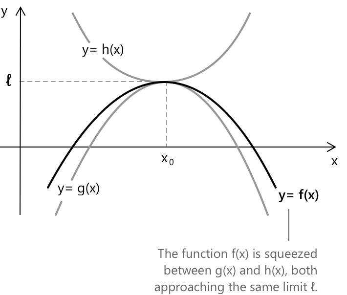

Теорема про стиснення
Що таке теорема про затискання
Теорема про затискання, також відома як теорема про «сендвіч», надає метод визначення границі функції, коли пряме обчислення є складним або коли функція демонструє складну осцилюючу поведінку поблизу певної точки. Ця теорема часто застосовується до функцій, що містять синус і косинус, особливо коли ці тригонометричні члени виявляють осцилюючу поведінку, що перешкоджає прямому обчисленню границі, наприклад:
\[ \sin\left(\frac{1}{x}\right) \quad \text{або} \quad \cos\left(\frac{1}{x}\right) \]
У таких ситуаціях функція обмежена двома іншими функціями з відомими та рівними границями, що полегшує обчислення цільової границі.
Формулювання
Нехай \( x_0 \in \mathbb{R} \cup { \pm\infty } \) є граничною точкою, що означає, що кожен окіл \(x_0\) містить принаймні одну точку області визначення, відмінну від \(x_0\). Нехай \( f \), \( g \) та \( h \) будуть дійснозначними функціями, визначеними на околі \(I\) точки \(x_0\). Припустимо, що для кожного \( x \in I \) виконується наступна нерівність:
\[ g(x) \leq f(x) \leq h(x) \]
Також припустимо, що границі \( f(x) \) та \( h(x) \) при \( x \to x_0 \) існують і дорівнюють деякому дійсному числу \( \ell \): \[ \lim_{x \to x_0} g(x) = \lim_{x \to x_0} h(x) = \ell \]
Тоді за цих гіпотез функція \( f(x) \) також має границю при \( x \to x_0 \), і ця границя дорівнює: \[ \lim_{x \to x_0} f(x) = \ell \]
На графіку чорна крива, що представляє \( f(x) \), лежить повністю між нижньою межею \( g(x) \) та верхньою межею \( h(x) \). Оскільки обидві обмежуючі функції прямують до \( \ell \), функція \( f(x) \) змушена наближатися до тієї самої границі.

Це демонструє геометричну інтуїцію, що лежить в основі теореми: якщо функція обмежена зверху і знизу двома функціями, які обидві збігаються до одного й того самого значення, то вона також повинна збігтися до цього значення.
Доведення теореми про затискання
Нехай \( \varepsilon > 0 \) буде довільним. Наша мета — довести, що функція \( f(x) \), яка обмежена між \( g(x) \) та \( h(x) \), прямує до тієї самої границі \( \ell \) при \( x \to x_0 \). За припущенням, ми знаємо, що \( \lim_{x \to x_0} g(x) = \ell \). Це означає, що існує додатне число \( \delta_1 \), таке що для кожного \( x \), достатньо близького до \( x_0 \) (зокрема, для всіх \( x \), для яких \( 0 < |x - x_0| < \delta_1 \)), маємо:
\[ |g(x) – \ell| < \varepsilon \quad \to \quad \ell – \varepsilon < g(x) < \ell + \varepsilon \]
Аналогічно, оскільки \( \lim_{x \to x_0} h(x) = \ell \), існує інше додатне число \( \delta_2 \), таке що:
\[ |h(x) - \ell| < \varepsilon \quad \to \quad \ell - \varepsilon < h(x) < \ell + \varepsilon \]
Тепер нехай \( \delta = \min(\delta_1, \delta_2) \). Тоді для кожного \( x \), такого що \( 0 < |x – x_0| < \delta \), обидві наведені вище нерівності виконуються. Але \( f(x) \) затиснута між \( g(x) \) та \( h(x) \), отже:
\[ g(x) \leq f(x) \leq h(x) \]
Поєднуючи це з обмеженнями для \( g(x) \) та \( h(x) \), отримаємо:
\[ \ell – \varepsilon < f(x) < \ell + \varepsilon \quad \to \quad |f(x) – \ell| < \varepsilon \]
Оскільки ця нерівність виконується для кожного \( \varepsilon > 0 \), ми робимо висновок, що:
\[ \lim_{x \to x_0} f(x) = \ell \]
Приклад
Наступний приклад демонструє, як теорема застосовується для обчислення наступної границі:
\[ \lim_{x \to 0} x \cdot \sin\left( \frac{1}{x} \right) \]
Член \( \sin\left( \frac{1}{x} \right) \) не має границі при \( x \to 0 \), оскільки він нескінченно осцилює між \(-1\) та \(1\). Однак для кожного дійсного числа \( x \neq 0 \) виконується наступна нерівність:
\[ -1 \leq \sin\left( \frac{1}{x} \right) \leq 1 \]
Множачи всю нерівність на \( x \), отримаємо:
\[ -|x| \leq x \cdot \sin\left( \frac{1}{x} \right) \leq |x| \]
Дійсно, коли \( x > 0 \), знак нерівності зберігається, тоді як для \( x < 0 \) знак нерівності змінюється, але абсолютне значення гарантує, що порівняння залишається симетричним відносно нуля. Тепер зауважимо, що обидві обмежуючі функції \( -|x| \) та \( |x| \) прямують до нуля при \( x \to 0 \):
\[ \lim_{x \to 0} -|x| = 0 \qquad \lim_{x \to 0} |x| = 0 \]
Оскільки \( f(x) \) затиснута між двома функціями, які обидві наближаються до нуля, ми можемо застосувати теорему про затискання і зробити висновок, що:
\[ \lim_{x \to 0} x \cdot \sin\left( \frac{1}{x} \right) = 0 \]
У багатьох випадках, коли осцилююча функція множиться на степінь \( x \), що наближається до нуля, загальна границя дорівнює нулю. Цей результат виникає тому, що осциляція залишається обмеженою, як це демонструють функції синуса та косинуса, які завжди обмежені значеннями від \(-1\) до \(1\). І навпаки, множник \( x^n \) наближається до нуля достатньо швидко, щоб домінувати над осциляцією, що змушує весь добуток збігатися до нуля.
Вправи: обчислити наступні границі, використовуючи теорему про затискання
-
\[\text{1. } \quad \lim_{x \to +\infty} \frac{\ln(3 + \sin x)}{x^3}\] розв'язання
-
\[\text{2. } \quad \lim_{x \to 0} x^4 \cdot \cos\left(\frac{2}{x}\right) + 2 \] розв'язання
Вправа 1
Обчислити наступну границю:
\[ \lim_{x \to +\infty} \frac{\ln(3 + \sin x)}{x^3} \]
Для початку зауважимо, що функція синуса завжди обмежена значеннями від \(-1\) до \(1\) для всіх дійсних \( x \), тому ми можемо записати:
\[ -1 \leq \sin x \leq 1 \]
З попередньої нерівності ми можемо записати:
\[ 2 \leq 3 + \sin x \leq 4 \quad \text{для всіх } x \in \mathbb{R} \]
Тепер, оскільки логарифмічна функція є строго зростаючою, маємо:
\[ \log 2 \leq \log(3 + \sin x) \leq \log 4 \]
Тепер ми ділимо всі частини нерівності на \( x^3 \), отримуючи:
\[ \frac{\log 2}{x^3} \leq \frac{\ln(3 + \sin x)}{x^3} \leq \frac{\log 4}{x^3} \quad \forall \, x > 0 \]
Оскільки обидві обмежуючі функції прямують до нуля при \( x \to +\infty \), ми застосовуємо теорему про затискання і отримуємо:
\[ \lim_{x \to +\infty} \frac{\ln(3 + \sin x)}{x^3} = 0 \]
Вправа 2
Обчислити наступну границю:
\[ \lim_{x \to 0} x^4 \cdot \cos\left( \frac{2}{x} \right) + 2 \]
Для цього ми почнемо з аналізу поведінки функції \( x^4 \cdot \cos\left( \frac{2}{x} \right) \). Ми знаємо, що функція косинуса обмежена значеннями від \(-1\) до \(1\) для всіх дійсних значень:
\[ -1 \leq \cos\left( \frac{2}{x} \right) \leq 1 \]
Множачи всі частини цієї нерівності на \( x^4 \), який завжди є невиNEGATIVE, ми отримаємо:
\[ -x^4 \leq x^4 \cdot \cos\left( \frac{2}{x} \right) \leq x^4 \]
Тепер ми знайдемо границю лівої та правої меж при \( x \to 0 \):
\[ \lim_{x \to 0} (-x^4) = 0 \qquad \lim_{x \to 0} x^4 = 0 \]
Отже, за теоремою про затискання, ми робимо висновок:
\[ \lim_{x \to 0} x^4 \cdot \cos\left( \frac{2}{x} \right) = 0 \]
Тепер повернемося до початкового виразу:
\[ \lim_{x \to 0} \left( x^4 \cdot \cos\left( \frac{2}{x} \right) + 2 \right) \]
Оскільки:
\[ \lim_{x \to 0} x^4 \cdot \cos\left( \frac{2}{x} \right) = 0 \]
ми отримаємо
\[ \lim_{x \to 0} x^4 \cdot \cos\left( \frac{2}{x} \right) + 2 = 0 + 2 = 2 \]
Вибрана література
- MIT OpenCourseWare, C. Rodriguez. The Squeeze Theorem
- University of California, Berkeley, A. Vizeff. Limit Laws and the Squeeze Theorem